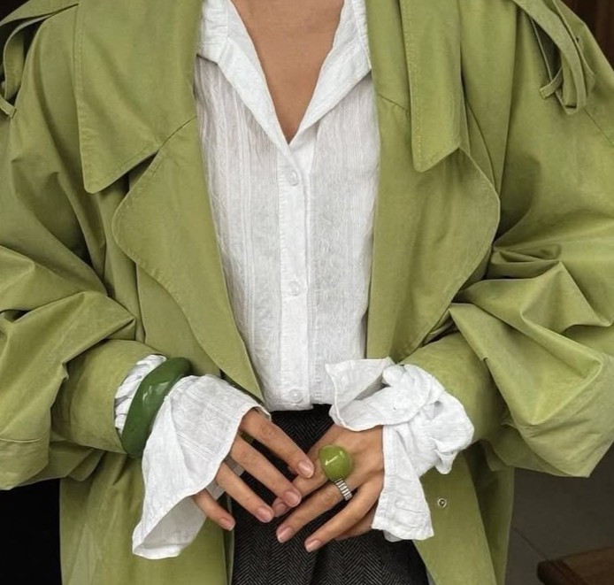
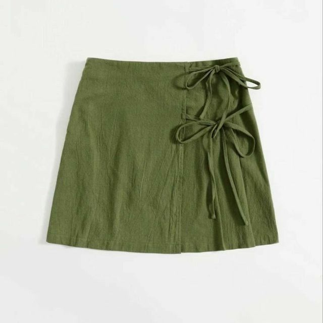
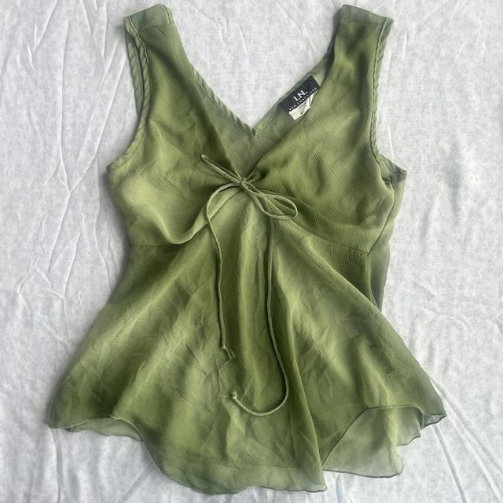
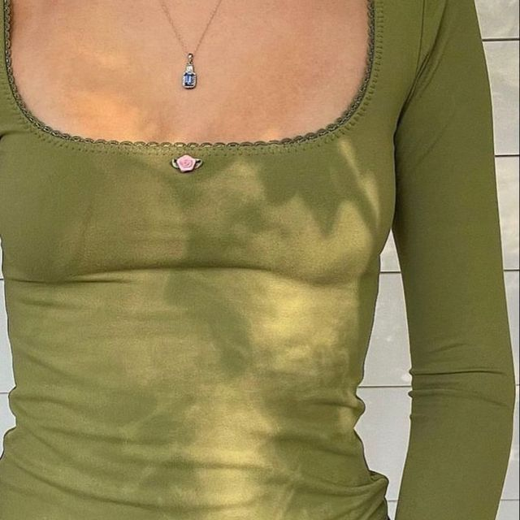
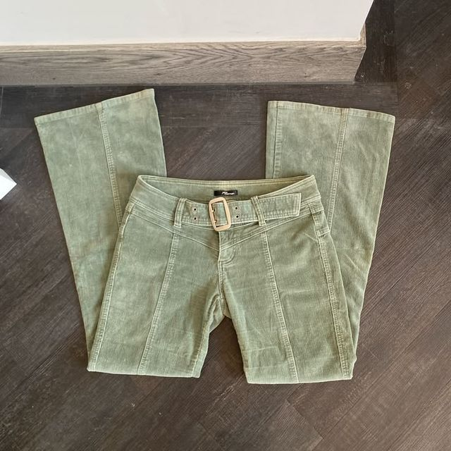
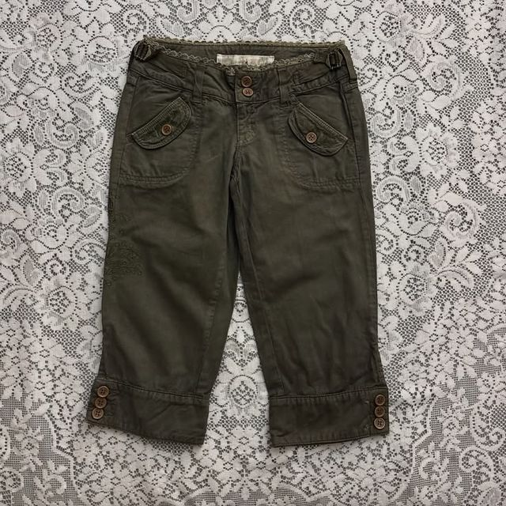
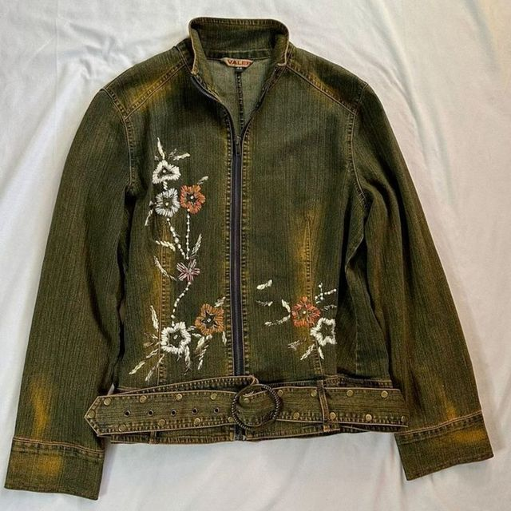
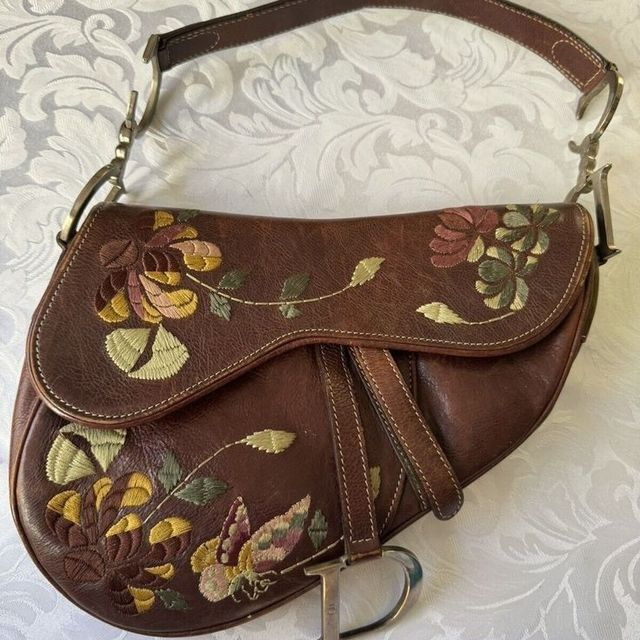
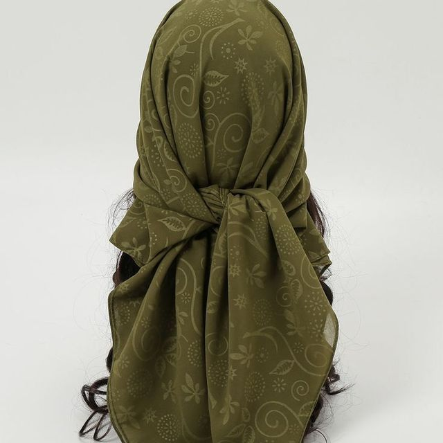
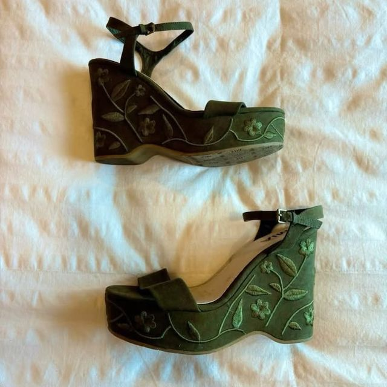

Comprar
Encontre peças com história, descritas com detalhes de tamanho, estado de conservação e tipo de fechamento, para escolher com segurança.
Compre, venda e troque roupas de segunda mão. Cada peça que ganha novo uso reduz a necessidade de matéria-prima nova e evita que mais resíduo têxtil vá para o lixo.
Na moda circular, a roupa não termina no lixo. Ela é usada, consertada, trocada, revendida e, quando já não serve mais, transformada em outra peça. É o oposto do modelo linear da moda rápida, que produz, usa por pouco tempo e descarta.
Quando uma peça ganha novos donos, sua vida útil se estende. Isso diminui a necessidade de matéria-prima virgem e de novas produções, e também reduz o volume de resíduos têxteis descartados.
Brechós e trocas ainda tornam a moda mais acessível e incentivam o consumo consciente: comprar menos, escolher melhor e cuidar do que já existe.

Encontre peças com história, descritas com detalhes de tamanho, estado de conservação e tipo de fechamento, para escolher com segurança.
Tem roupas que não usa mais? Ofereça essas peças e dê a elas um novo destino. Brechós e pessoas interessadas podem falar conosco para participar.
Troque peças com outras pessoas e renove o guarda-roupa sem comprar nada novo. Menos consumo, mais variedade e mais cuidado com o planeta.
Use os filtros para encontrar o que procura. As peças são descritas com tamanho, estado e fechamento, para facilitar a escolha de todas as pessoas.
As peças e os preços abaixo são fictícios e as fotos são ilustrativas, usadas para demonstrar o funcionamento do catálogo.

Vestidos e saias
À venda: R$ 129,90

Vestidos e saias
Disponível para troca

Camisas e blusas
À venda: R$ 34,90

Camisas e blusas
Disponível para troca

Calças e bermudas
À venda: R$ 74,90

Calças e bermudas
Disponível para troca

Casacos e jaquetas
À venda: R$ 94,90

Casacos e jaquetas
Disponível para troca

Calçados e acessórios
À venda: R$ 119,90

Calçados e acessórios
À venda: R$ 19,90

Calçados e acessórios
Disponível para troca
Na galeria você acompanha processos artesanais e o antes e depois de roupas que ganharam uma nova vida.
Fale conosco para tirar dúvidas, oferecer peças ou propor uma parceria.